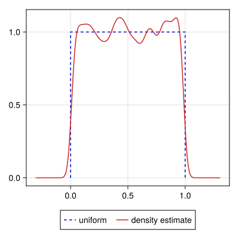
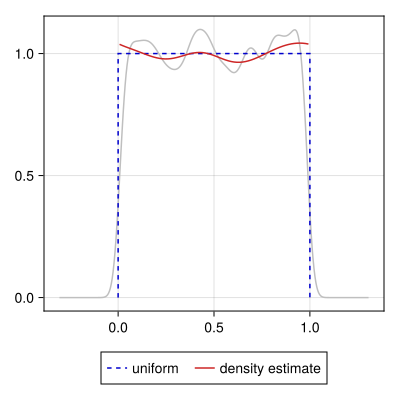

User Guide
Getting Started
To install KernelDensityEstimation.jl, it is recommended that you use the jmert/Registry.jl package registry, which will let you install (and depend on) the package similarly to any other Julia package in the default General registry.
pkg> registry add https://github.com/jmert/Registry.jl
pkg> add KernelDensityEstimationSimple kernel density estimate
For the following example, we'll use a small sample of Gaussian deviates:
using KernelDensityEstimation
x = 3 .+ 0.1 .* randn(250) # x ~ Normal(3, 0.1)The key interface of this package is the kde function. In its simplest incantation, you provide a vector of data and it returns a kernel density object (in the form of a UnivariateKDE structure).
using KernelDensityEstimation
K = kde(x)The density estimate $f(x)$ is given at locations K.x (as a StepRangeLen) with density values K.f. For instance, the mean and variance of the distribution are:
μ1 = step(K.x) * sum(@. K.f * K.x)
μ2 = step(K.x) * sum(@. K.f * K.x^2)
(; mean = μ1, std = sqrt(μ2 - μ1^2))(mean = 2.9986807890073575, std = 0.11013630728702606)which agree well with the known underlying parameters $(\mu = 3, \sigma = 0.1)$.
Visualizing the density estimate (see Extensions — Makie.jl), we see a fair level of consistency between the density estimate and the known underlying model.

Densities with boundaries
The previous example arises often and is handled well by most kernel density estimation solutions. Being a Gaussian distribution makes it particularly well behaved, but in general distributions which are unbounded and gently fade away to zero towards $\pm\infty$ are relatively easy to deal with. Despite how often the Gaussian distribution is an appropriate [approximation of the] distribution, there are still many cases where various bounded distributions are expected, and ignoring the boundary conditions can lead to a very poor density estimate.
Take the simple case of the uniform distribution on the interval $[0, 1]$.
x = rand(5_000)By default, kde assumes the distribution is unbounded, and this leads to "smearing" the density across the known boundaries to the regions $x < 0$ and $x > 1$:
K0 = kde(x)
We can inform the estimator that we expect a bounded distribution, and it will use that information to generate a more appropriate estimate. To do so, we make use of three keyword arguments in combination:
loto dictate the lower bound of the data.hito dictate the upper bound of the data.boundaryto specify the boundary condition, such as:open(unbounded),:closed(finite), and half-open intervals:closedleft/:openrightand:closedright/:openright.
In this example, we know our data is bounded on the closed interval $[0, 1]$, so we can improve the density estimate by providing that information
K1 = kde(x, lo = 0, hi = 1, boundary = :closed)
Note that in addition to preventing the smearing of the density beyond the bounds of the known distribution, the density estimate with correct boundaries is also smoother than the unbounded estimate. This is because the sharp drops at $x = \{0, 1\}$ no longer need to be represented, so the algorithm is no longer compromising on smoothing the interior of the distribution with retaining the cut-offs.
In addition to the aforementioned triple of lo, hi, and boundary keywords, there is a single bounds keyword which can replace all three. The built-in mechanism only accepts a tuple where bounds = (lo, hi, boundary), but the additional keyword makes it possible to customize behavior for new types of arguments. For example, there is a package extension for Distributions.jl which allows using the support of a distribution to automatically infer appropriate boundary conditions and limits.
See the docstring for kde (and references therein) for more information.
Densities of weighted samples
In some cases, the data to be analyzed is a weighted vector of data (represented as a vector of data and a corresponding vector of weight factors). For instance, importance sampling of an MCMC chain results in non-uniform weights that then must be considered when deriving a density estimate.
Take the following toy example where we have a target parameter $v$ and nuisance parameter $p$ that are correlated, where a uniform prior was assumed for $p$:
# correlation coefficient and nuisance parameter
ρ, p = 0.85, randn(500)
# correlated target parameter
v = ρ .* p .+ sqrt(1 - ρ^2) .* randn.()Now suppose that you have reason to update your prior on $p$, believing now that positive values are twice as likely as negative ones. If the method of generating $v$ is expensive, and because the change in prior is not extreme, it may be efficient and acceptable to instead importance sample the existing values by reweighting the samples by the ratio of the priors:
\[\begin{align*} P_1(p) &\propto 1 & P_2(p) &\propto \begin{cases} 1 & p < 0 \\ 2 & p \ge 0 \\ \end{cases} \end{align*}\]
P1(z) = 1.0
P2(z) = z ≥ 0 ? 2.0 : 1.0
weights = P2.(p) ./ P1.(p)We then simply provide these weights as a keyword argument in the call to kde:
K1 = kde(v)
K2 = kde(v; weights)As expected, this shifts the resultant density estimate to the right, toward more positive values.
The effective sample size (UnivariateKDEInfo.neffective) is calculated from the weights using Kish's definition. Both of the bandwidth estimators (SilvermanBandwidth and ISJBandwidth) use this definition in scaling the bandwidth with the (effective) sample size.